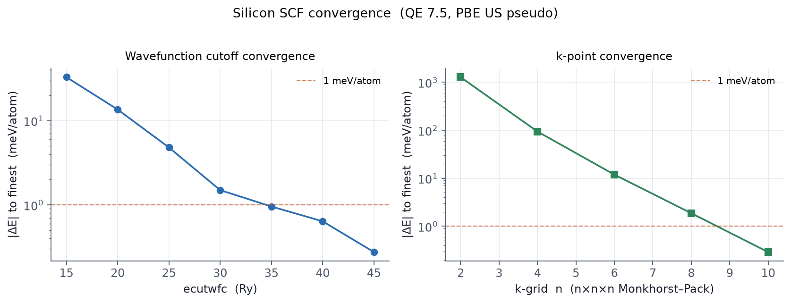

주기 결정에서 전자 상태는 브릴루앙 영역(Brillouin zone) 안의 파수벡터 k 로 표시됩니다. 전체 에너지·전하밀도 같은 양은 영역 전체에 대한 적분인데, 이를 유한한 k점들의 합으로 근사합니다. k점을 얼마나 촘촘히 잡느냐가 정확도와 계산량을 동시에 좌우합니다.
4.1 Monkhorst-Pack 격자
SCF 계산에는 보통 균일한 Monkhorst-Pack 격자를 씁니다.
K_POINTS (automatic)
8 8 8 0 0 0
앞의 세 수는 각 방향 격자 크기, 뒤의 세 수는 오프셋(0이면 Γ점 포함, 1이면 반 간격 이동)입니다. 대칭성이 있으면 QE가 자동으로 대칭적으로 동등한 k점을 묶어 실제 계산할 점 수(irreducible k-points)를 줄입니다. 위 8×8×8은 실리콘에서 대칭으로 29개 점으로 줄어듭니다.
셀이 크면 역격자가 작아 k점이 촘촘할 필요가 줄어듭니다. 원시 셀에는 촘촘한 격자(예: 8×8×8), 큰 초격자(supercell)에는 성긴 격자(예: 2×2×2, 때로 Γ점 하나)로 충분한 경우가 많습니다.
4.2 수렴 점검
적정 k점 밀도는 계마다 다르므로 관심 물리량이 수렴할 때까지 격자를 키워 가며 확인해야 합니다. 실리콘 전체 에너지의 k점 수렴은 다음과 같습니다(QE 7.5).
| k-grid | 전체 에너지 (Ry) | 가장 촘촘한 값과의 차이 |
|---|---|---|
| 2×2×2 | −22.65178 | 1278 meV/atom |
| 4×4×4 | −22.82587 | 94 meV/atom |
| 6×6×6 | −22.83794 | 12 meV/atom |
| 8×8×8 | −22.83942 | 1.8 meV/atom |
| 10×10×10 | −22.83965 | 0.3 meV/atom |
성긴 격자에서 오차가 매우 크다가(2×2×2는 1 eV 이상!) 급격히 줄어듭니다. 실리콘 같은 반도체는 8×8×8 정도면 원자당 수 meV로 수렴합니다. 아래는 컷오프와 k점 수렴을 함께 그린 것입니다.

4.3 금속은 더 촘촘하게
금속은 페르미 면 근처에서 점유가 급변하므로, 반도체보다 훨씬 촘촘한 k점과 smearing(05장)이 필요합니다. 알루미늄 같은 단순 금속도 12×12×12 이상을 흔히 쓰고, 페르미 면이 복잡하면 더 촘촘히 잡습니다.
4.4 밴드구조의 k점은 다릅니다
지금까지는 영역을 고르게 채우는 격자였지만, 밴드구조는 고대칭점을 잇는 경로를
따라 계산합니다. 이때는 crystal_b / tpiba_b 로 경로를 지정합니다
(07장, 예제 E2).
4.5 요점
- SCF에는
automatic(Monkhorst-Pack) 격자를 쓰고, 셀이 클수록 성기게 잡습니다. - k점 밀도는 관심 물리량이 수렴할 때까지 키워 확인합니다.
- 금속은 반도체보다 훨씬 촘촘한 k점 + smearing이 필요합니다.